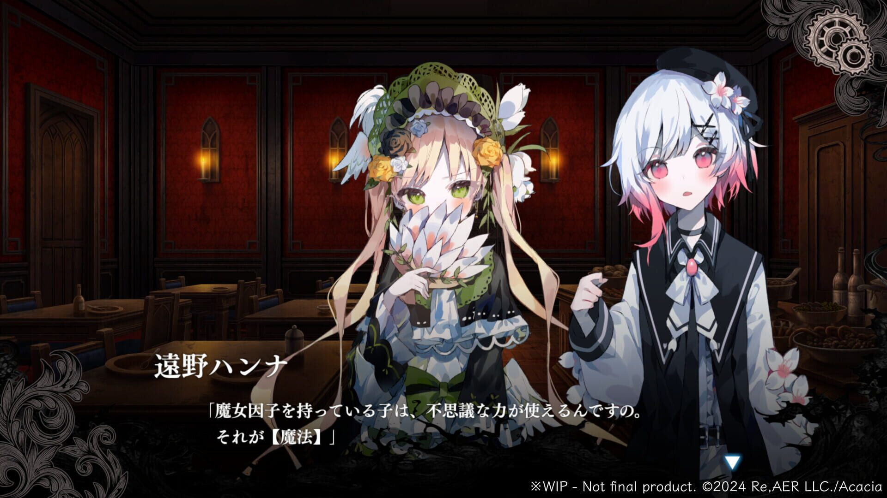
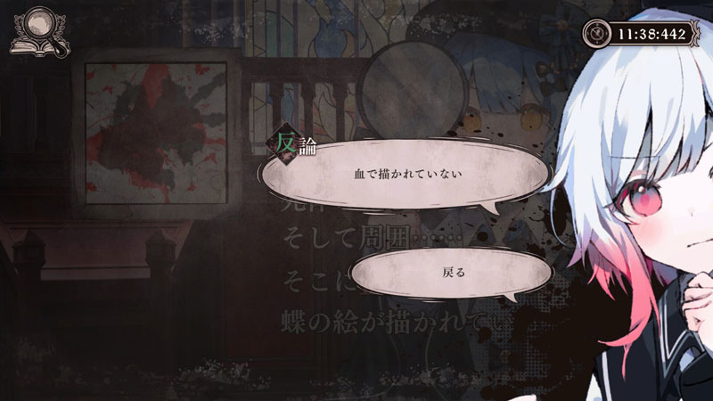

Game Overview & Mechanics
The game is divided into two main components: the Adventure part and the Witch Trial part.
Exploration & Investigation

The player explores the prison mansion where they and the other twelve magical girls are confined. Through conversations and repeated investigations, the player can learn the backstories of the girls, foster relationships, and collect vital clues and items.
Talking with each character offers branching choices, some of which shape character interactions and (possibly) future trials.
Investigation & Conviction

Every so often, a murder will occur amongst the characters. These lead directly into witch trials, where the player must uncover the witch responsible. They can review previous statements and evidence collected during investigations.
Each of the characters has a unique magical ability that can influence the testimony of themselves or others, as well as provide important clues. After a decision has been reached, the player can choose to convict a witch; if incorrect, they will experience a game over.
Keyboard & Mouse
| Key / Input | Icon / Preview | Action | Description |
|---|---|---|---|
| Enter / Space | img / gif |
Advance | Advance to the next line of dialogue or scene. |
| Esc | img / gif |
Menu | Open the main menu or pause the game. |
| Ctrl | img / gif |
Skip | Hold to fast-skip through already read text. |
| A | img / gif |
Auto Mode | Toggle auto-advance — text moves forward automatically. |
| S | img / gif |
Save | Open the save menu to save your progress. |
| L | img / gif |
Load | Open the load menu to load a previous save. |
| Left Click | img / gif |
Select / Advance | Click to advance dialogue or select a choice. |
| Right Click | img / gif |
Hide UI | Hide the text box to view the scene fully. |
| Scroll Up | img / gif |
Backlog | Scroll up to view previously read dialogue. |
Magic & Event Inputs
| Key / Input | Icon / Preview | Action | Description |
|---|---|---|---|
| [ Key ] | img / gif |
[ Action ] | [ Description of this special control. ] |
| [ Key ] | img / gif |
[ Action ] | [ Description of this special control. ] |
| [ Key ] | img / gif |
[ Action ] | [ Description of this special control. ] |